国外短剧
The Mermaid Princess Returns · 第一集
正在连接在线视频…
视频简介
海底古封印旋转，裂隙扩张。银粉发王族女子与护卫试图稳住封印，力量却持续流失。裂隙另一侧，骸冠老者推举黑冠领主统治七海。海湾随从进言，领主当面否认金湾的利益比自己的权力重要。片尾以受压者泛蓝的眼睛暗示局势升级。
在快手观看原视频 ↗制作资产
角色资产
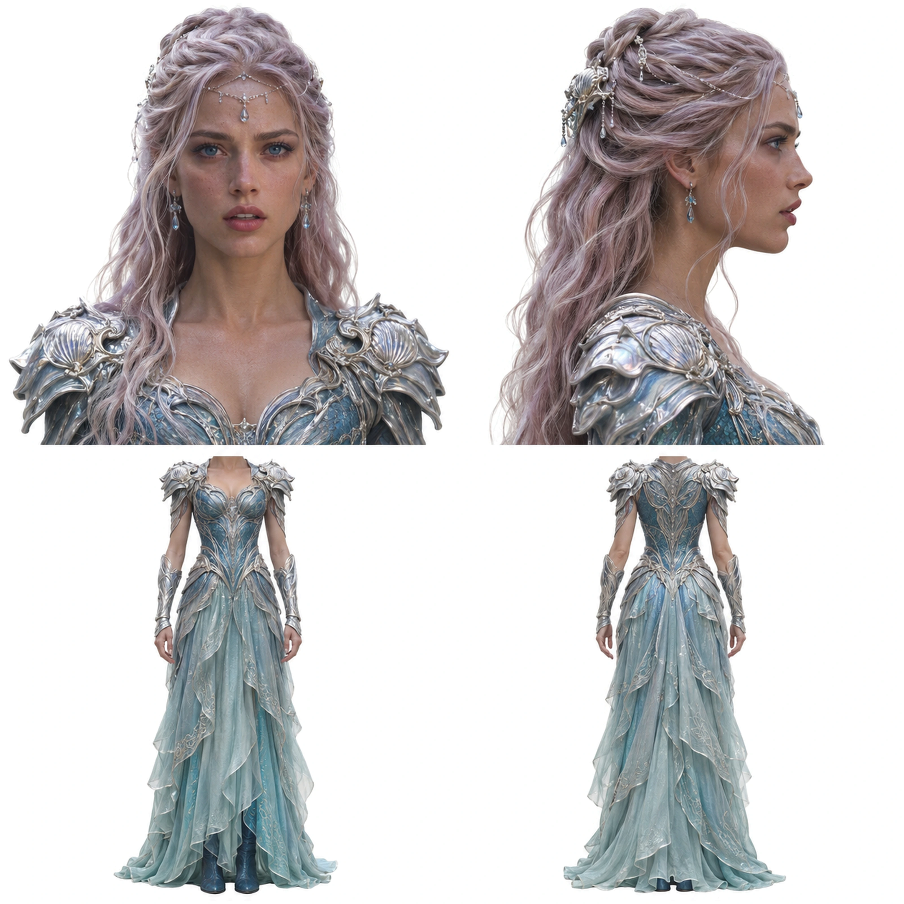
银粉发王族女子
掌握海域力量的王族女子，竭力守住古封印。 银粉长发、蓝银护肩和束腰甲、冰蓝长裙；三叉权杖和手部蓝光分层拍摄。 成片未完整展示的方位按可见造型补全。
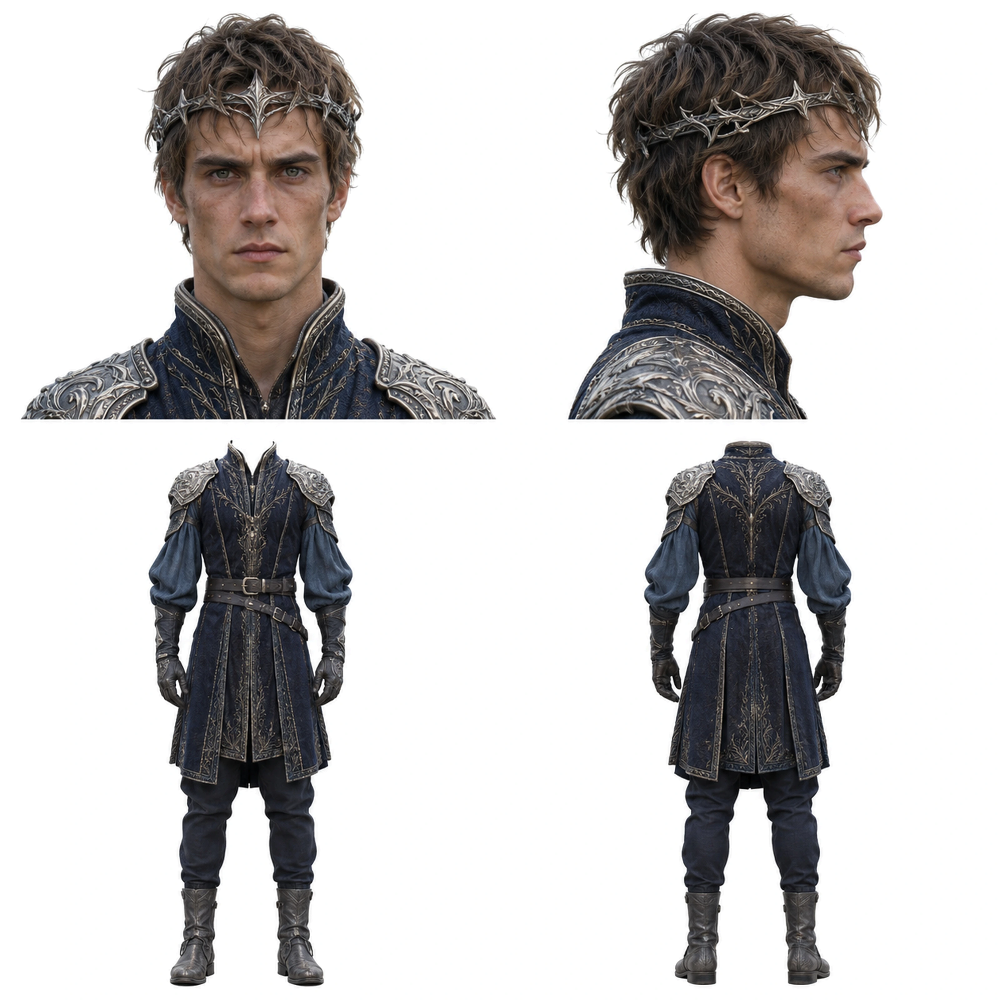
灰金发护卫
扶住王族女子，并察觉力量被持续抽走。 灰金短发，深蓝衣甲，银灰肩甲，手的能量裂纹后期单独添加。 成片未完整展示的方位按可见造型补全。
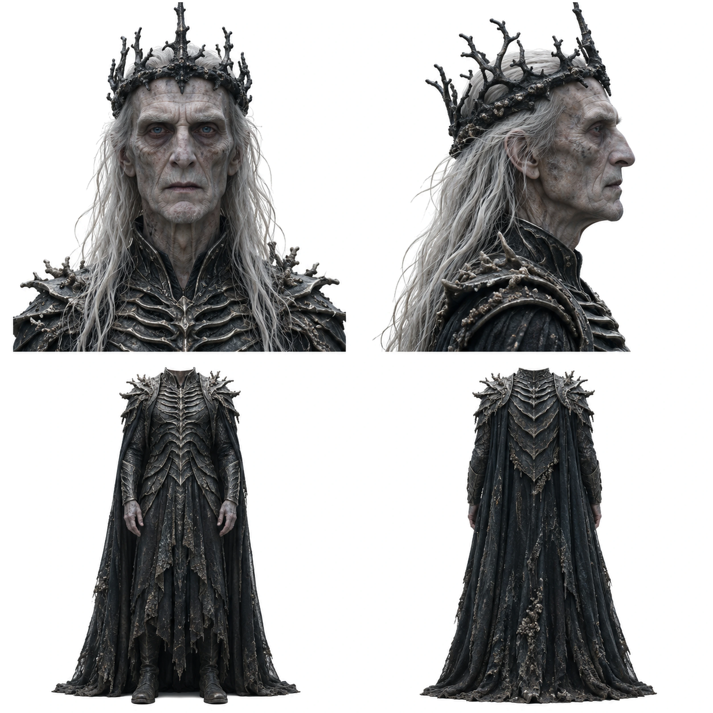
骸冠老者
逼近封印的灰肤老者，拥护黑冠领主。 灰白长发、黑枝冠与肋骨状深甲，语速缓慢。 成片未完整展示的方位按可见造型补全。
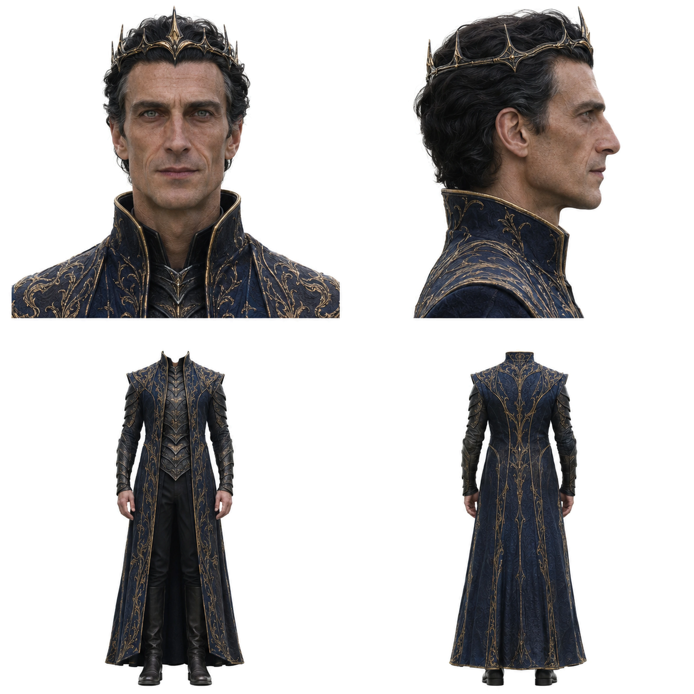
黑冠领主
觊觎七海权力，面对随从的质疑反而扩大野心。 梳拢黑发、黑金冠、蓝黑长外套和立领，态度由温和转为威压。 成片未完整展示的方位按可见造型补全。
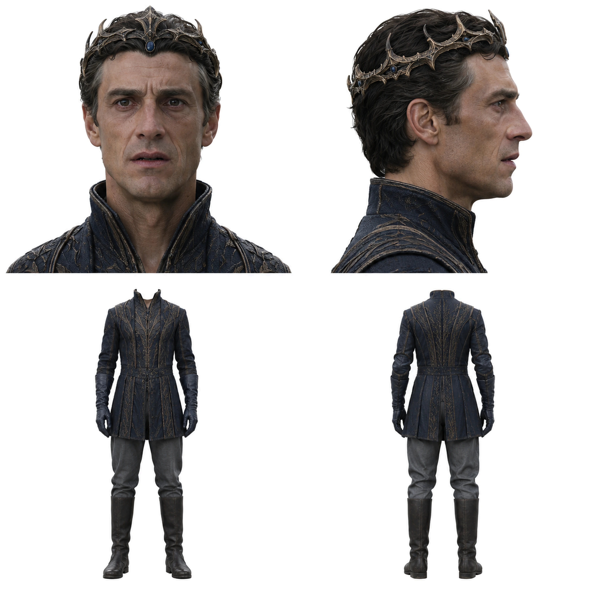
海湾随从
担心金湾受损而向领主进言。 扫向后方的短发、深蓝布衣和手套，冲突段落保持弯身和捂脸位置。 成片未完整展示的方位按可见造型补全。
场景资产
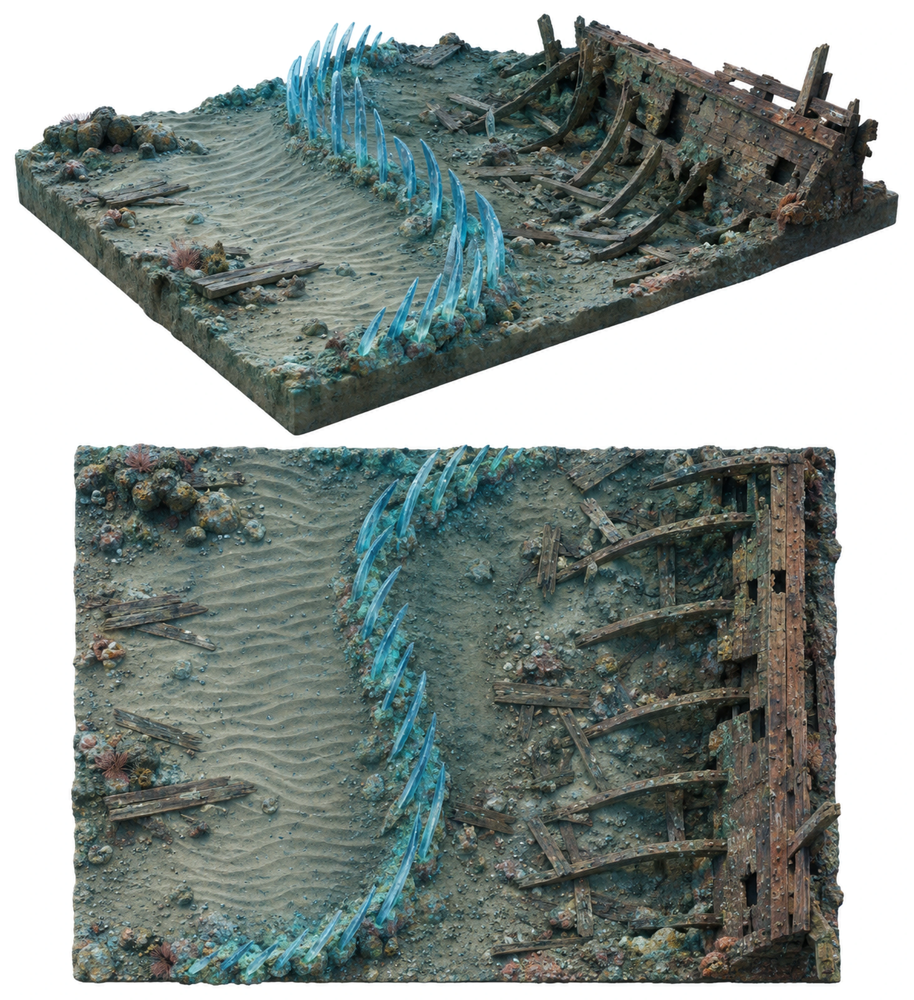
沉船与蓝光结界
沉船与蓝光结界的场景视觉设定，用于空间布局、光影与镜头背景。
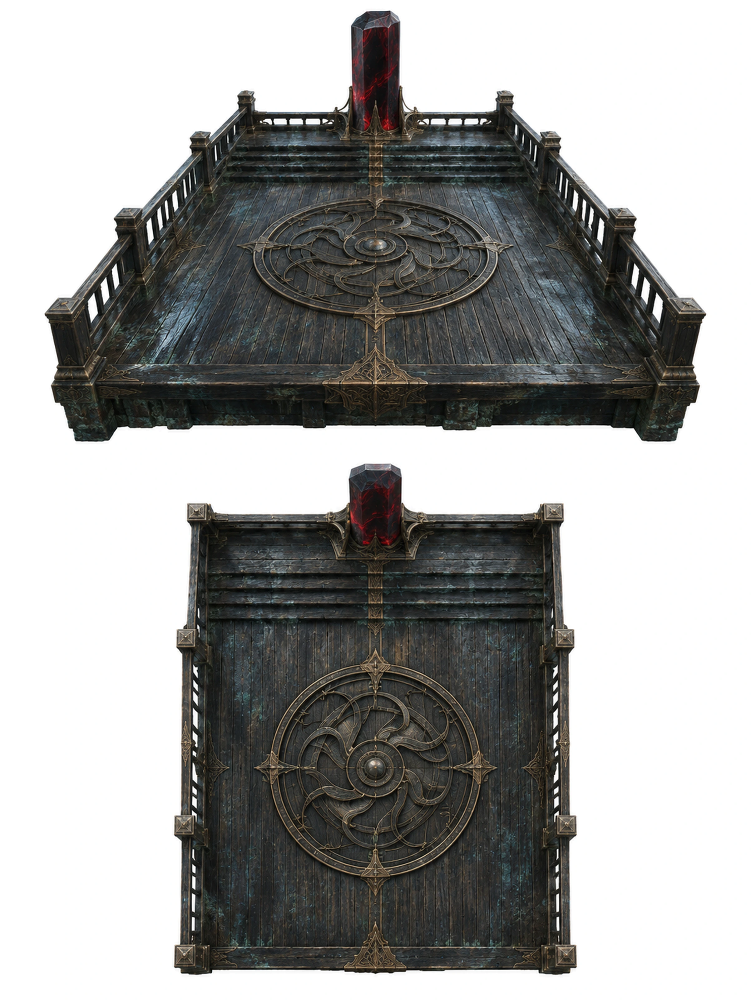
封印甲板与裂隙
封印甲板与裂隙的场景视觉设定，用于空间布局、光影与镜头背景。
道具资产
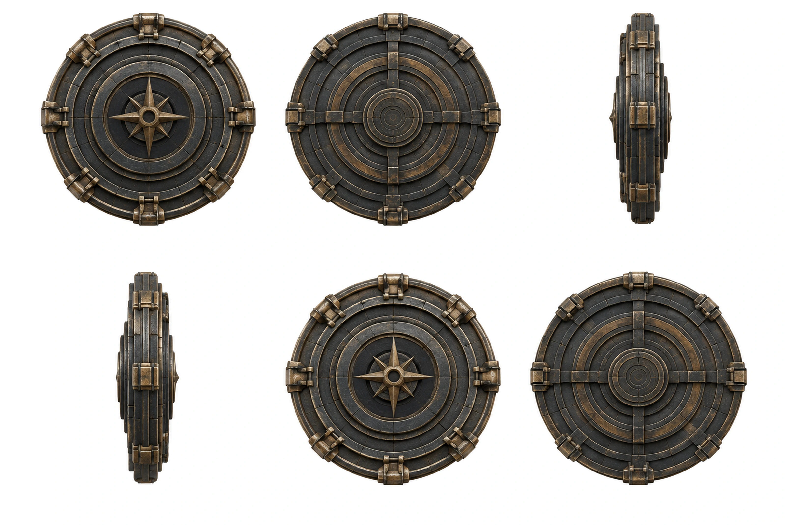
古封印圆盘
黑青金属内盘及老铜多级外环，中心为抽象星形花纹。 圆盘应维持外环与中心轴一致；单独制作活动环和光效供开裂段落使用。 成片未完整展示的方位按可见造型补全。
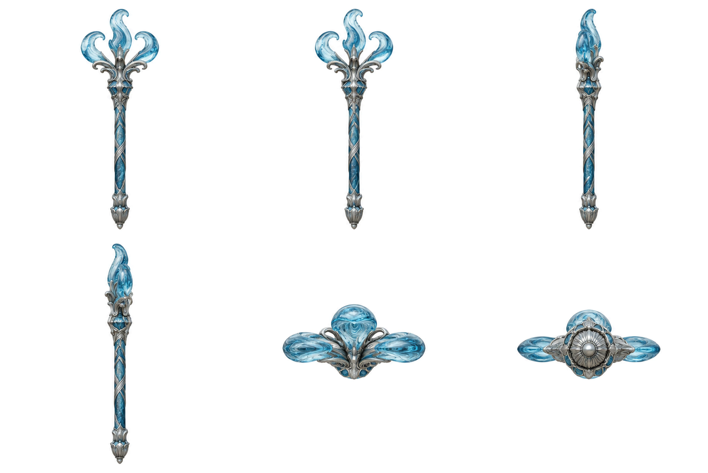
冰蓝三叉权杖
蓝银杆身和带三支装饰峰的玻璃质冠头。 握在王族女子身前，尾端指向画外以保持封印光位。 成片未完整展示的方位按可见造型补全。
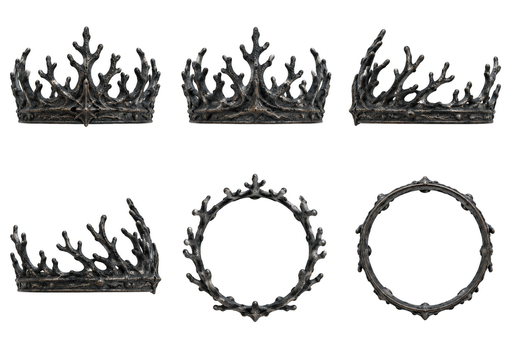
骸冠
黑褐枝状冠，骨质哑光和暗金属底环。 老者的标志，冠尖来向与白发分线保持一致。 成片未完整展示的方位按可见造型补全。
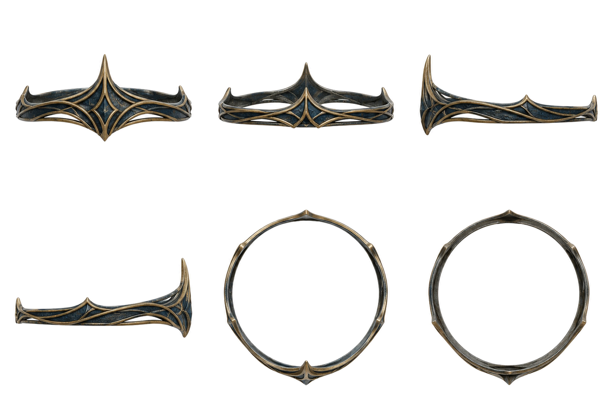
黑金冠
低矮蓝黑金属冠，外圈暗金边和尖形浮雕。 领主的身份道具，抢光不要盖住眼神。 成片未完整展示的方位按可见造型补全。
剧本与分镜
完整剧本与分镜脚本
国外短剧 · 第一集 原片时长 90.21 秒 故事梗概 海底古封印旋转，裂隙扩张。银粉发王族女子与护卫试图稳住封印，力量却持续流失。裂隙另一侧，骸冠老者推举黑冠领主统治七海。海湾随从进言，领主当面否认金湾的利益比自己的权力重要。片尾以受压者泛蓝的眼睛暗示局势升级。 人物 王族女子试图维持封印，灰金发护卫协助并观察力量衰减。骸冠老者拥护黑冠领主。海湾随从代金湾提出顾虑。 场景 沉船与蓝光结界靠破损船体确定地理方位。封印甲板与裂隙采用竖直柱体及圆盘组织双方视线。 道具用途 圆盘和权杖用于封印动作。骸冠、黑金冠区分阵营。手部裂纹、能量流和裂隙光属于后期画面效果。 剧本与分镜 按原片抽帧重建的复拍制作稿。画面未能确认的对白、音效与镜头节奏按下表执行。 | 镜号 | 画面内容 | 镜头视角 | 使用资产 | 动作描述 | 台词/旁白 | 音效 | 单镜头时长 | | 01 | 沉船外结界脉冲 | 海床低机位全景 | 沉船与蓝光结界、古封印圆盘 | 粒子沿结界上行，圆盘在沉船侧出现 | — | 低水声、结界脉动 | 4.00秒 | | 02 | 古封印内外环旋转 | 圆盘斜侧特写 | 古封印圆盘 | 旧金属环转过缺口，中心逐渐变亮 | — | 金属转动 | 4.00秒 | | 03 | 王族女子执杖，掌心裂光出现 | 半身侧景转手掌特写 | 银粉发王族女子、冰蓝三叉权杖 | 女子稳住前臂，光沿掌心蔓延 | — | 水流、光效低响 | 7.00秒 | | 04 | 骸冠老者观察古物 | 正面中近景 | 骸冠老者、骸冠 | 老者把目光移向旋转圆盘 | 老者：这件古物已经开始运转。 | 水下底音 | 5.00秒 | | 05 | 护卫发现力量被抽走 | 双人中景切近景 | 灰金发护卫、银粉发王族女子、古封印圆盘 | 护卫扶住她，盯着手掌的蓝光 | 护卫：力量正在流失。 女子：封印的核心还没有破。 | 紧张呼吸、细碎电响 | 8.00秒 | | 06 | 蓝色结界与裂隙对冲 | 广角全景交叉俯视 | 沉船与蓝光结界、古封印圆盘、封印甲板与裂隙 | 深红柱体向上伸，结界边沿连续闪动 | — | 低频轰鸣 | 9.00秒 | | 07 | 女子辨认对方在逼她调动力量 | 女子侧脸及双人反打 | 银粉发王族女子、灰金发护卫、冰蓝三叉权杖 | 女子转头确认护卫的位置，再稳住权杖 | 女子：他们想逼我使用禁忌力量。 | 裂隙声拉高 | 9.00秒 | | 08 | 圆形甲板上出现黑冠领主 | 地板近景上摇至双人中景 | 封印甲板与裂隙、黑冠领主、骸冠老者 | 两个人站在裂柱前，领主略偏头 | — | 木板共振 | 8.00秒 | | 09 | 老者拥护领主登位 | 骸冠老者近景 | 骸冠老者、黑冠领主 | 老者朝领主说话，领主站着听 | 老者：七海的王座是你的。 | 室内般远回声 | 7.00秒 | | 10 | 随从顾虑金湾商道 | 侧面近景与领主反打 | 海湾随从、黑冠领主、黑金冠 | 随从欠身进言，领主脸色由笑转冷 | 随从：大人，以后谁还敢把货运过金湾？ | 深水底音 | 9.00秒 | | 11 | 随从弯身捂住脸 | 带老者前后景的侧中景 | 海湾随从、黑冠领主、骸冠老者 | 随从失去平衡扶住栏边，领主俯视他 | 领主：你凭什么质问我？ | 沉声、木料震响 | 7.00秒 | | 12 | 领主在圆盘前张开双臂 | 略仰角全身镜头 | 黑冠领主、封印甲板与裂隙、古封印圆盘 | 领主拉开手臂，裂柱留在背后 | 领主：七海的资源都会属于我。 | 裂隙轰鸣 | 7.00秒 | | 13 | 泛蓝的眼睛填满画面 | 眼部极近景 | 海湾随从、封印甲板与裂隙 | 焦点锁在虹膜蓝光，至画面切黑 | 画外：金湾怎样又有什么关系？ | 低颤音突停 | 6.21秒 | 时长合计 90.21 秒